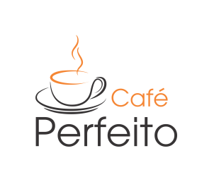

{% load static %}
<html>
<head>
    <title>{% block titulo_page %} - Principal{% endblock %}</title>

    <meta charset="utf-8">
    <meta name="viewport" content="width=device-width, initial-scale=1.0">
    <meta http-equiv="X-UA-Compatible" content="IE=edge">
    <!--Let browser know website is optimized for mobile-->
    <meta name="viewport" content="width=device-width, initial-scale=1.0"/>

    <!-- Bootstrap CSS -->
    <link rel="stylesheet" href="{% static 'cafeperfeito/bootstrap/css/bootstrap.min.css' %}" type="text/css">

    <!--Import Google Icon Font-->
    <link rel="stylesheet" href="https://fonts.googleapis.com/css?family=Roboto:400,700&subset=latin,cyrillic-ext"
          type="text/css"/>
    <link rel="stylesheet" href="https://fonts.googleapis.com/icon?family=Material+Icons" type="text/css"/>

    <!-- Our Custom CSS -->
    <link rel="stylesheet" href="{% static 'cafeperfeito/css/cafeperfeito.min.css' %}" type="text/css">
    <link rel="stylesheet" href="{% static 'cafeperfeito/css/animacaoCirculo.min.css' %}" type="text/css">
</head>

<body class="tema tema-cafe-perfeito">
<!-- Page Loader -->
<div id="logo" class="tela-branca">
    <div class="hoja">
        
    </div>
</div>
<!-- #END# Page Loader -->
<!-- Overlay For Sidebars -->
<div class="overlay"></div>
<!-- #END# Overlay For Sidebars -->
<!-- Search Bar -->
<div class="search-bar">
    <div class="search-icon">
        <i class="material-icons">search</i>
    </div>
    <input type="text" placeholder="Pesquisar por...">
    <div class="close-search">
        <i class="material-icons">close</i>
    </div>
</div>
<!-- #END# Search Bar -->
<!-- Top Bar -->
<nav class="navbar">
    <div class="container-fluid">
        <div class="navbar-header">
            <a href="javascript:void(0);" class="navbar-toggle collapsed" data-toggle="collapse"
               data-target="#navbar-collapse" aria-expanded="false"></a>
            <a href="javascript:void(0);" class="bars"></a>
            <a class="navbar-brand" href="index.html">CafePerfeito.com</a>
        </div>
        <div class="collapse navbar-collapse" id="navbar-collapse">
            <ul class="nav navbar-nav navbar-custom-right-menu">
                <!-- Call Search-->
                <li><a href="javascript:void(0);" class="js-search" data-close="true"><i
                        class="material-icons">search</i></a></li>
                <!-- #END# Call Search-->

            </ul>
        </div>
    </div>
</nav>
<!-- #Top Bar -->


<!-- jQuery - Slim version (=without AJAX) -->
<script type="text/javascript" src="{% static 'cafeperfeito/jquery/jquery-3.3.1.min.js' %}"></script>
<!-- Popper.JS -->
<script type="text/javascript" src="{% static 'cafeperfeito/bootstrap/js/bootstrap.bundle.min.js' %}"></script>
<!-- Bootstrap JS -->
<script type="text/javascript" src="{% static 'cafeperfeito/bootstrap/js/bootstrap.min.js' %}"></script>
<!--JavaScript at end of body for optimized loading-->
<script type="text/javascript" src="{% static 'cafeperfeito/materialize/js/materialize.min.js' %}"></script>
<!-- Our Custom CSS -->
<script type="text/javascript" src="{% static 'cafeperfeito/js/cafeperfeito.js' %}"></script>
</body>

</html>